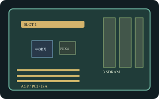

[ INDIVIDUAL COMPONENT // MOTHERBOARDS ]
Intel SE440BX-2
Intel-branded ATX desktop board for the Slot 1 Pentium II generation, based on the 440BX chipset. This record is for the SE440BX-2 model, not the earlier SE440BX or other 440BX boards.

Exact identity and revision: Intel SE440BX-2; Intel Product Guide revision -001. PCB revision and AA assembly number are specimen-specific: transcribe both from the board label and use matching firmware. The guide documents Pentium II and Celeron support; do not infer Pentium III support from the 440BX chipset alone.
Specifications
| CPU / socket / chipset | Intel Pentium II or Celeron in Slot 1, within the board's documented bus and BIOS support; Intel 440BX (82443BX host bridge and 82371AB PIIX4). |
|---|---|
| Form factor / case | ATX, 12 x 7.75 in. (305 x 197 mm); use an ATX case with matching standoffs and rear-I/O opening. |
| Memory | Three 168-pin SDRAM DIMM sockets; up to 384 MB per the Intel guide. Use supported unbuffered SDRAM; do not substitute DDR. |
| Expansion | One AGP, three PCI, one shared PCI/ISA position, and one ISA slot. |
| Storage | Two IDE channels (ATA/33) and a 34-pin floppy interface. |
| Rear I/O | PS/2 keyboard and mouse, two USB, two serial, and parallel; onboard audio connectors/options depend on the board assembly. |
| BIOS / PSU | Intel BIOS family 4S4EB2X0.86A; verify AA/revision before recovery or update. Standard ATX power input; use a compatible ATX PSU and inspect the actual connector and required rails before energizing. |
Compatibility and revision notes
The 440BX chipset is used on many non-Intel boards, but their BIOS, voltage regulation, and CPU qualifications are not interchangeable. Fit only a Slot 1 processor and memory explicitly covered by the SE440BX-2 guide and the specimen's AA number. Check case standoffs, PSU connector, and front-panel pinout before installation.
Sources & further reading
- Intel SE440BX-2 Product Guide, revision -001 (archived scan)Intel-authored model guide for CPU, memory, layout, connectors, and setup.
- Intel SE440BX-2 Technical Product Specification (archived copy)Board-level technical reference; verify the printed assembly and PCB revision on the specimen.